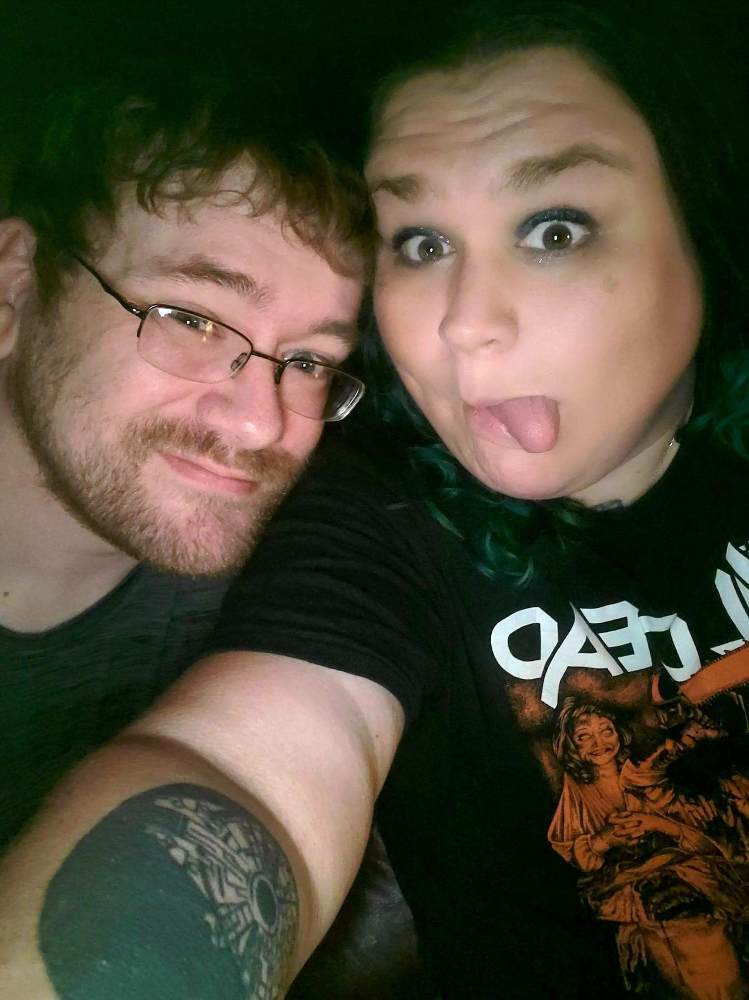

About Me
Hey, I’m Zach. I’m a dad of three, a homebody, and someone who somehow fell in love with programming after years of quitting it over and over again. The idea of creating something from nothing with code still blows my mind. It’s one of the few things that actually feels fun and meaningful at the same time.
When I’m not learning to code, I’m usually playing games — mostly MMOs. I’ve always liked the worlds, the systems, the way everything fits together. I think that’s part of why programming clicked for me. It scratches the same itch, just in a different way.
The real reason I’m taking coding seriously this time is my wife, Miracle. She decided to learn alongside me, and having her right there with me has been insanely motivating. It’s a lot harder to quit when the person you love is grinding through the same challenges with you. Plus, she’s way better at keeping us on track than I am.
My long‑term goal is pretty simple: I want a job I don’t hate. I want to use these skills to either work from home or finally get into a field where I actually enjoy what I’m doing. I’m tired of clocking into things that drain me. Coding feels like the first real path out of that.
Outside of coding and gaming, I don’t really have a long list of hobbies. I’ve always been more of a “stay home and chill” kind of person. But honestly, learning to code has become the first hobby I’ve ever truly stuck with, and that’s saying something.
If you’re here reading my blog, I hope it encourages you. I know what it feels like to want to learn something but constantly feel overwhelmed, not smart enough, or like you’re already behind. I still feel that way sometimes. But I’m learning that you don’t have to be perfect, you just have to keep going.
This blog is my way of documenting the journey. The wins, the mistakes, the “why isn’t this working” moments, all of it. If my progress helps even one person realize they can learn this stuff too, then it’s worth it.
